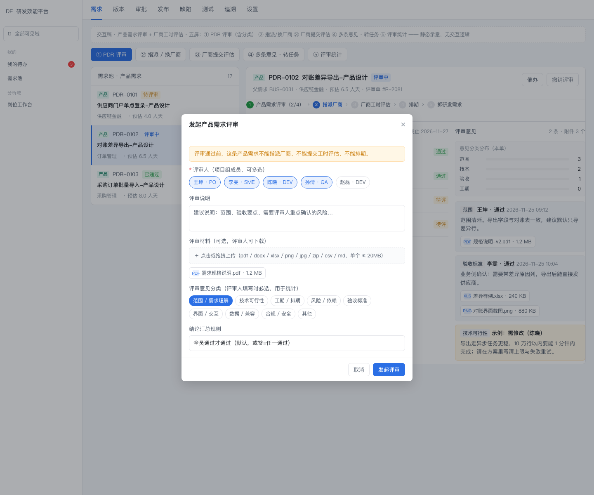
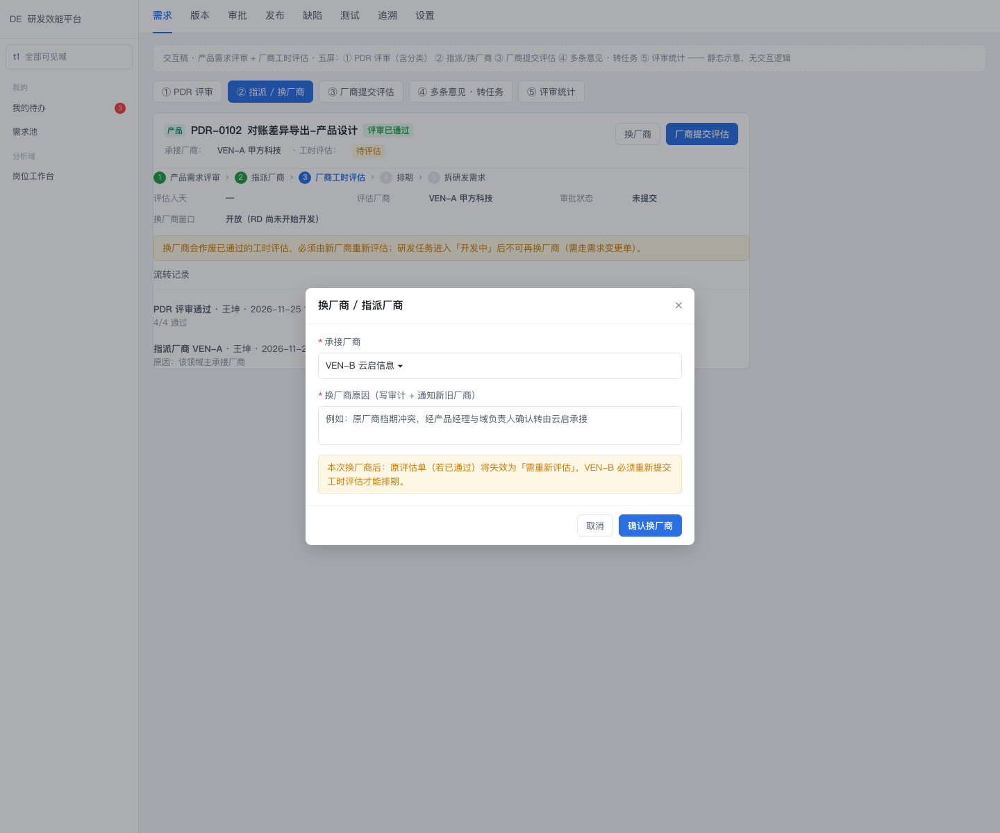
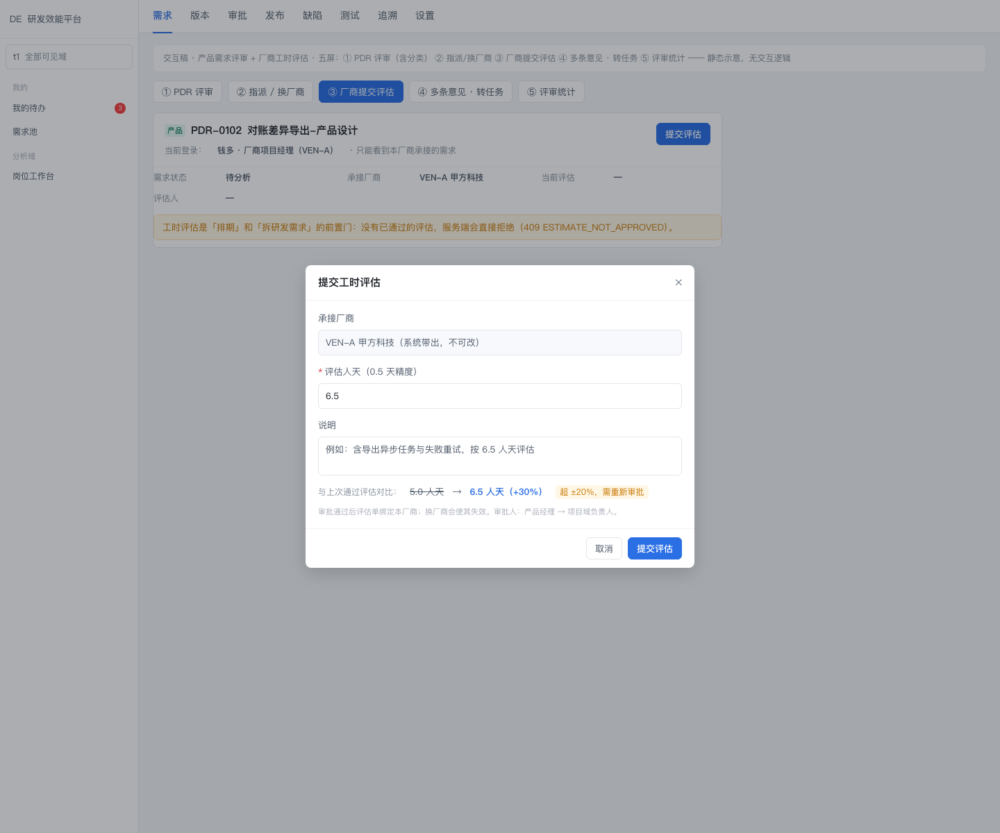
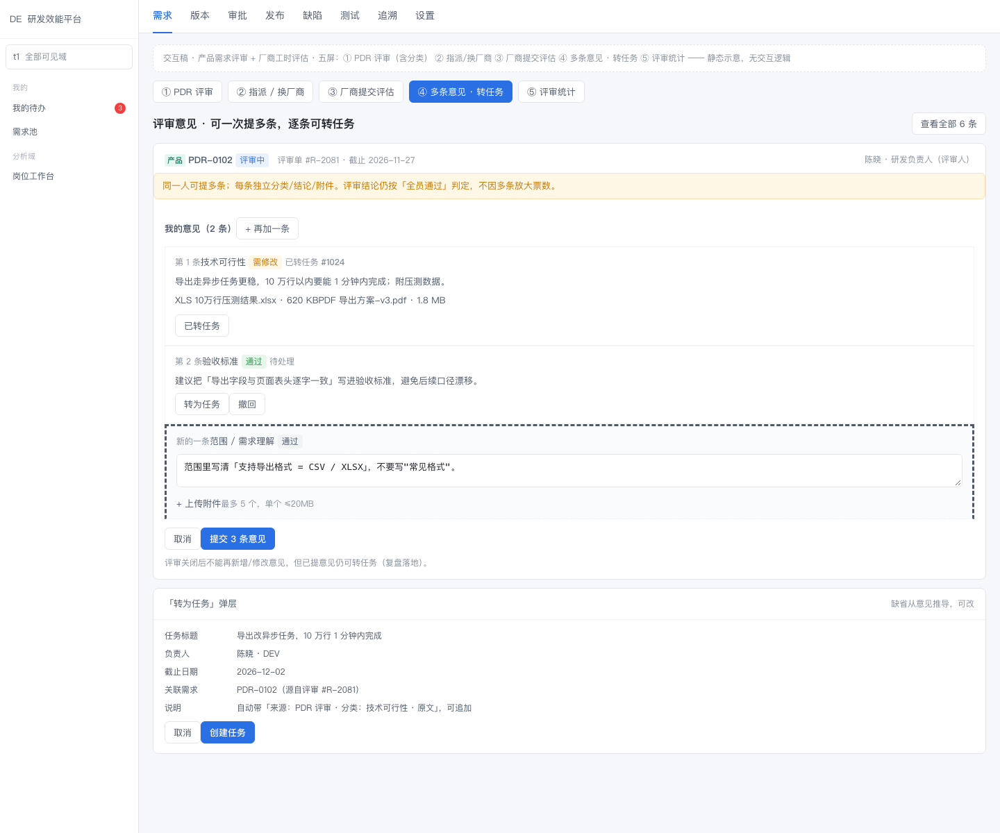
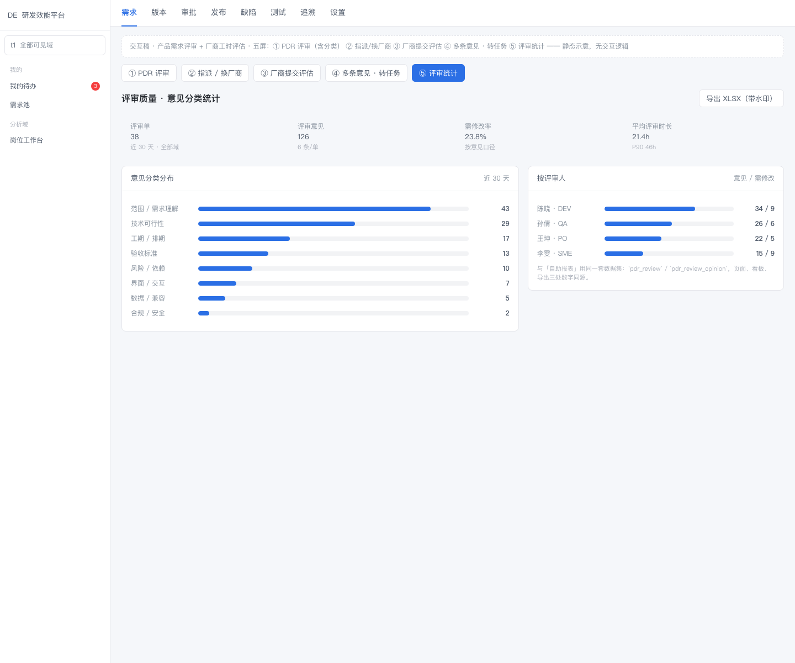

本文是什么：给流水线 PRD 阶段的输入材料（不是最终 PRD）。含现状取证（精确到文件行）、目标流程、数据/接口/权限变更、交互稿、可执行验收口径、迁移与风险。 基线：
main = f8dee2a（2026-11-25）。取证方式=读代码 + 真跑接口，每条都带证据。 用户原话（2026-11-25）：
- 「工作量评估是由厂商做的，所以要先选择厂商后再评估工作量，再任务还没开始前，允许变更厂商」
- 「产品需求也需要进行评审，要反馈评审意见，评审人员可以选择参与的项目组成员，大家各自发表评审意见」
把产品需求（PDR）从「拆出来就评估排期」改成 评审 → 选厂商 → 厂商评估 → 排期 → 拆 RD，并把工时评估的所有权从内部挪到承接厂商（任务开始前可换厂商，换厂商即重评）。
| 能力 | 现状 | 证据 |
|---|---|---|
| 指派厂商 | 只校验「未终态」；写 VENDOR_TRANSFER 审计 +
通知；没有任何状态门，也不与工时评估联动 |
req-service/src/main/java/com/example/req/requirement/RequirementService.java:680-714 |
| 指派厂商的权限 | 动作码 req.action.assign_vendor → 功能码
req:assign-vendor；路由规则精确匹配 |
platform-contract/.../ActionRegistry.java:80、platform-common/.../PermissionRouteTable.java:139-140 |
| PDR 状态机 | PENDING_ANALYSIS --schedule--> SCHEDULED --start_dev--> IN_DEV --deliver--> DELIVERED --accept--> ACCEPTED_CLOSED，没有评审态 |
platform-contract/.../StateTables.java:76-78 |
| 工时评估提交 | POST /requirements/{id}/estimate → 建第 5 类单据
WBS_ESTIMATE；权限是服务层判
can("deliver")（内部 PMO/研发），厂商账号无此档位 |
req-service/.../requirement/WbsEstimateService.java:92-141、:583-590 |
| 评估单与厂商 | 无绑定：评估单文档里没有 vendor 字段，换厂商不会让评估失效 | 同上；EstimateSnapshot/WbsEstimateViews 无
vendor |
| 评估失效 | 只有「人天变动 >±20%」派生 STALE（r26） |
WbsEstimateService.STALE_THRESHOLD |
| 产品需求评审 | 不存在。仅业务需求有
REQ_REVIEW，且审批通过由回调自动推进 POOLED |
PlatformContract/StateTables.java:66-71；req-service/.../requirement/RequirementReviewCallback.java:26-30 |
| 审批引擎能力 | 支持 5
类单据、节点会签/或签（MODE_ALL/MODE_ANY）、审批人来源
ROLE/USER/SUPERVISOR/DOMAIN_OWNER，可复用来做「多人评审」 |
req-service/.../approval/WorkflowDefinition.java:27-28、ApproverResolver.java:18-78、ApprovalEngine.java:542 |
| 项目组 / 项目成员 | 全仓不存在（grep -rniE "project_member|projectMember|sys_project|项目组"
零命中） |
需新增，否则「评审人从项目组成员里选」没有数据来源 |
| 附件能力 | 已有通用附件基础设施：attachment
表（biz_type/biz_id/file_name/path/size/content_type/sha256/uploader_id）+
GET/POST/DELETE /attachments +
/{id}/download；限制 20MB、校验 bizId 归属、写
ATTACH_DELETE 审计 |
req-service/src/main/java/com/example/req/attachment/{AttachmentController,AttachmentService,AttachmentEntity}.java；AttachmentService.java:55（20MB）、:278-294（bizType
白名单） |
| 附件业务类型 | 目前只支持 REQ / DEFECT / TEST_PLAN / WIKI_PAGE
四类；路由权限落
page("req.pool","defect.list","test.cases","collab.wiki") |
AttachmentService.java:278-294、PermissionRouteTable.java:393-394 |
| 迁移现状 | 最新 V16__requirement_change.sql，新增从
V17 起 |
req-service/src/main/resources/db/migration/ |
一个容易踩的坑：POST /requirements/{id}/estimate
在路由表里落到兜底规则
^/requirements.*$ → page("req.pool","me.tasks")（PermissionRouteTable.java:163），所以它看起来没有权限校验；真正的
403 来自服务层
requireDeliverPermission（WbsEstimateService.java:583-590）。改造时若要新增动作码，必须把精确规则插在这条兜底之前，否则会被页面权限放行。
拆出产品需求(PDR, PENDING_ANALYSIS)
│
▼
① 产品需求评审 项目组成员多人并行，各自 通过/需修改/驳回 + 意见
│ 全部通过
▼
② 指派承接厂商 assign-vendor（此时才允许；换厂商窗口直到「任务开始」）
│
▼
③ 厂商提交工时评估 评估人天 + 说明，评估单绑定 vendor_id
│ 审批通过
▼
④ 排期 schedule → SCHEDULED
│
▼
⑤ 拆研发需求 decompose → RD(TODO)
│
▼
现有 RD 链路（开始开发→任务→提测→测试结论→合入→完成→交付→验收）| 环节 | 现在 | 目标 | 违反时的错误码 |
|---|---|---|---|
| PDR 评审 | 无 | 未通过评审：不能指派厂商/评估/排期 | 409 PDR_REVIEW_REQUIRED（detail:
reviewId?, required:"pdr_review"） |
| 指派厂商 | 任何未终态 | 评审通过后；IN_DEV 之后不可换 |
409 VENDOR_LOCKED（detail: currentStatus,
allowed:["TODO"] 语义按类型给） |
| 工时评估 | 内部 PMO/研发提交 | 由承接厂商提交（内部保留兜底权，见 §6 R4） | 409 VENDOR_NOT_ASSIGNED（detail:
required:"assign_vendor"） |
| 排期 | 需评估通过（r26） | 不变，额外要求厂商评估 | 409 ESTIMATE_NOT_APPROVED（已有） |
| 换厂商 | 随时可换、评估不失效 | 换厂商 → 原评估单失效 → 必须新厂商重评 | 审计 VENDOR_CHANGED；评估派生 STALE（原因
VENDOR_CHANGED） |
未指派 ──assign-vendor(原因必填)──▶ 已指派(VENDOR_A)
│
厂商提交评估 ──▶ 评估通过(绑定 VENDOR_A)
│
┌──────────── 任务未开始（RD=TODO 且 PDR≠IN_DEV）────────────┐
│ 换厂商(原因必填) → 评估单失效(STALE/VENDOR_CHANGED) → 回「未评估」│
└──────────────────────────────────────────────────────────┘
│ 任务开始（RD IN_DEV / PDR IN_DEV）
▼
锁定（换厂商 409 VENDOR_LOCKED，走需求变更单）| 表 | 关键列 | 约束/索引 |
|---|---|---|
project |
id, tenant_id, code, name, domain_id, owner_user_id, status(ACTIVE/ARCHIVED), created_at |
uk(tenant_id, code)；idx(tenant_id, domain_id) |
project_member |
id, tenant_id, project_id, user_id, role_in_project(PO/PM/DEV/QA/SME), active, joined_at |
uk(project_id, user_id)；idx(tenant_id, user_id) |
pdr_review |
id, tenant_id, requirement_id, project_id, instance_id, status(DRAFT/IN_REVIEW/PASSED/REJECTED/CANCELLED), conclusion, initiator_id, created_at, closed_at |
uk(requirement_id) where status='IN_REVIEW'（同一需求同时只允许
1 张在评）；idx(tenant_id, status) |
pdr_review_opinion |
id, tenant_id, review_id, reviewer_id, seq(该评审人第几条), decision(PASS/NEED_CHANGE/REJECT), **category**, comment, **status(OPEN/TASKED/RESOLVED)**, **task_id**, created_at |
不做 (review_id, reviewer_id)
唯一约束（同一人可提多条）；idx(review_id)、idx(tenant_id, category)、idx(task_id) |
评审意见要能带附件，不新建表，复用
attachment：
| 项 | 取值 |
|---|---|
biz_type |
新增白名单值
PDR_REVIEW（AttachmentService.normalizeType
扩展） |
biz_id |
pdr_review.id（评审单级，不挂到单条意见上——意见与附件都在评审单下，读侧按人分组） |
| 可选扩展 | 若需要"附件属于某条意见"，加一列
ref_id BIGINT NULL（指向
pdr_review_opinion.id），缺省不加，先按评审单维度 |
路由权限沿用
page("req.pool", …)（PermissionRouteTable.java:393-394），上传的归属校验放在服务层（只允许本次评审的评审人/发起人在评审进行中上传）。
| 表 | 新增列 | 说明 |
|---|---|---|
requirement |
project_id BIGINT NULL |
PDR 建议必填；存量 NULL
走回退规则；idx(tenant_id, project_id) |
wbs_estimate（若评估单落独立表）或评估文档 |
vendor_id BIGINT NULL、participant_kind INTERNAL/VENDOR |
存量回填
vendor_id = requirement.assignee_vendor_id；为空表示内部评估 |
若评估单以 JSON 文档存于审批实例（现状如此，
EstimateSnapshot），则把vendor_id写进文档并在wbs_estimate汇总表加列以便查询/校验；两种存法都要在验收里断言「换厂商后读出来是 STALE」。
意见必须带一个分类（单选，够统计且不逼用户做多标签判断）；分类走
sys_dict 字典而不是硬编码枚举，业务可自行增删：
| code | 中文 | 典型用法 |
|---|---|---|
RANGE |
范围 / 需求理解 | 边界不清、漏场景、与父需求不一致 |
TECH |
技术可行性 | 实现方案、性能、异步/批量、依赖能力 |
SCHEDULE |
工期 / 排期 | 人天评估、排期冲突、依赖顺序 |
RISK |
风险 / 依赖 | 外部系统、数据迁移、上线风险 |
ACCEPTANCE |
验收标准 | 通过条件、测试口径、口径不一致 |
UI |
界面 / 交互 | 页面流程、字段展示、状态可读性 |
DATA |
数据 / 兼容 | 字段口径、历史数据、导入导出格式 |
COMPLIANCE |
合规 / 安全 | 权限、脱敏、审计、水印 |
OTHER |
其他 | 兜底（缺省值，允许但不鼓励） |
统计口径（三处同源，避免"页面一个数、报表另一个数"）：
created_at → closed_at（小时），以及 P90；pdr_review（评审单）、pdr_review_opinion（意见）作为新数据集进分析域，供
/reports 自助报表与看板直接取数（复用既有
AnalyticsDatasets 白名单机制，不写第二套 SQL
引擎）。为什么允许多条：一条评审意见通常只针对一个点（范围、性能、验收口径……），把它们塞进一段文字里，既无法分类统计，也无法逐条跟踪闭环。所以：
seq 递增，不设唯一约束），每条独立拥有
category / decision / comment / 附件 / status；MODE_ALL
等），不因某人不通过而"每人只能一条"——多条意见属于"一个人提了几个问题"，不是"投了几票"；统计口径里"意见"与"评审单"分开算（见
4.4）。OPEN（待处理）→
TASKED（已转任务）→
RESOLVED（任务完成/问题消除）；decision=REJECT
的意见可标 RESOLVED 结案，不必都转任务。意见转任务（把评审结论变成可执行动作，闭环的关键）：
| 项 | 说明 |
|---|---|
| 端点 | POST /pdr-reviews/{reviewId}/opinions/{opinionId}/to-task |
| 请求 | {assigneeId?, dueDate?, estimateHours?, title?, description?}（都可选，缺省从意见推导） |
| 落库 | 复用交付域 task
表（deliver-service）：title 缺省取意见前 40
字、description 带「来源：PDR 评审 #reviewId · 分类 ·
原文」、requirementId 挂该 PDR 的父 RD 或 PDR 本身（PDR
无任务归属时挂 PDR） |
| 回写 | pdr_review_opinion.task_id = 新任务
id、status = TASKED；写入
audit_log（PDR_OPINION_TO_TASK，detail 带
opinionId/taskId/category） |
| 限制 | 已转过的意见再转 → 409 OPINION_ALREADY_TASKED（detail
带既有 taskId）；非本评审评审人且非产品经理 →
403 NOT_ALLOWED；评审结束后仍可转任务（复盘落地属后续动作，不随评审关闭而禁止） |
| 可见性 | 任务继承 ScopeSql
行级隔离；厂商评审人转出的任务只能落在本厂商承接范围（越界
403 OUT_OF_SCOPE） |
| 统计 | /pdr-reviews/stats 增加 taskedCount
与「意见闭环率 = TASKED+RESOLVED / 全部意见」两个度量 |
| 方法 | 路径 | 用途 | 备注 |
|---|---|---|---|
GET/POST |
/projects、PUT /projects/{id} |
项目维护 | 权限 org:manage |
GET/POST/DELETE |
/projects/{id}/members |
项目成员维护 | 同上 |
POST |
/requirements/{id}/pdr-review |
发起 PDR 评审：{reviewerIds:[], note} |
动作码 req.action.pdr_review_start |
POST |
/pdr-reviews/{reviewId}/opinions |
评审人提交意见：{decision, **category**, comment}（category
必填，非法值 400 INVALID_CATEGORY） |
动作码 req.action.pdr_review_opinion |
POST |
/pdr-reviews/{reviewId}/conclude |
汇总结论（也可以全票后自动汇总，见 §6 R2） | 动作码 req.action.pdr_review_conclude |
GET |
/requirements/{id}/pdr-review |
读评审单 + 意见列表 | 页面码 req.pool |
POST |
/pdr-reviews/{reviewId}/opinions/{opinionId}/to-task |
意见转任务（见 4.5），返回 {taskId, taskCode} |
动作码 req.action.pdr_review_task |
GET |
/requirements/{id}/pdr-review/opinions |
意见列表：支持
?reviewerId&category&status&page&size（多条意见分页） |
页面码 req.pool |
GET |
/pdr-reviews/stats |
意见分类统计：?domainId&from&to&groupBy=CATEGORY|REVIEWER|DECISION
→ 计数 / 占比 / 平均评审时长 |
页面码 req.pool（读） |
GET |
/pdr-reviews/datasets |
分析域数据集白名单元信息（pdr_review、pdr_review_opinion，含维度/度量） |
复用 /reports/datasets 机制 |
/attachments，不新增端点）| 方法 | 路径 | 说明 |
|---|---|---|
POST |
/attachments?bizType=PDR_REVIEW&bizId={reviewId} |
评审人上传附件（multipart file）；仅
IN_REVIEW 期间、仅该评审的评审人/发起人 |
GET |
/attachments?bizType=PDR_REVIEW&bizId={reviewId} |
列附件（评审人、发起人、能看到该需求的角色） |
GET |
/attachments/{id}/download |
下载（走现有鉴权与范围校验） |
DELETE |
/attachments/{id} |
删除：仅上传者本人或产品经理，且评审未结束 |
| 接口 | 变更 |
|---|---|
POST /requirements/{id}/assign-vendor |
加状态门（评审通过才允许、IN_DEV 后 409）；换厂商时作废已通过评估单并通知新旧厂商 |
POST /requirements/{id}/estimate |
要求「已指派厂商」（409
VENDOR_NOT_ASSIGNED）；允许厂商账号提交且仅限本厂商承接需求；评估文档写
vendor_id |
GET /requirements/{id} |
view 增加
pdrReview{status, conclusion, opinions[]}、estimate.vendorId/vendorName |
PDR_REVIEW_REQUIRED；未指派厂商 → 评估 409
VENDOR_NOT_ASSIGNED；评估未通过 → 排期 409
ESTIMATE_NOT_APPROVED（已有）。category（非法/缺失 → 400
INVALID_CATEGORY，detail.allowed[]
列可选值）；MODE_ALL（默认全员通过才算通过）；任一
NEED_CHANGE/REJECT → 评审
REJECTED，PDR
保持可编辑并记录意见；重新发起评审需新建单据（历史保留）。TODO 且
PDR 未进 IN_DEV；换厂商 → 该需求 APPROVED
评估单派生 STALE（原因 VENDOR_CHANGED）→
状态回到「待评估」；IN_DEV 之后 409
VENDOR_LOCKED；换厂商必须填原因，写
VENDOR_CHANGED 审计并通知新旧厂商。VENDOR_PM
与厂商研发）可提交评估，且
requirement.assignee_vendor_id == user.vendorId，否则
403 OUT_OF_SCOPE；内部
PMO/研发保留提交权（缺省保留，便于兜底），但同样要求先指派厂商。IN_REVIEW 评审单、1 张 ACTIVE
评估单；并发发起/重复提交用唯一约束 + 409
兜底；换厂商与提交评估加乐观锁（version）避免「换厂商后立刻被旧厂商提交评估」。bizType=PDR_REVIEW
时，服务层校验「调用者是本次评审的评审人或发起人」且「评审单状态 =
IN_REVIEW」，否则 403 NOT_REVIEWER /
409 REVIEW_CLOSED；上传沿用 20MB 上限与
sha256；类型白名单（缺省
pdf/docx/xlsx/png/jpg/zip/csv/md），非白名单
415 UNSUPPORTED_MEDIA_TYPE；不落公开
URL，下载一律过鉴权（越权
404，不泄露存在性）；评审结束后附件只读，删除 → 409
REVIEW_CLOSED。POST .../opinions
不做「同人唯一」校验，每次新建一条（seq
自动递增，可一次提交多条 opinions[]）；to-task
只能由本评审评审人/产品经理发起、每 opinion
只成功一次（409 OPINION_ALREADY_TASKED）、任务创建与
task_id 回写同事务、跨服务失败回滚并返回
503 TASK_CREATE_UNAVAILABLE；评审单关闭后
to-task
仍可用，但禁止再新增/修改意见（409 REVIEW_CLOSED）。PDR_REVIEW_START /
PDR_REVIEW_OPINION / PDR_REVIEW_REJECT /
PDR_REVIEW_PASS / VENDOR_CHANGED /
ESTIMATE_STALE_BY_VENDOR，全部进动态流与追溯。| 新增动作码 | 页面码 | 默认授予 | 说明 |
|---|---|---|---|
req.action.pdr_review_start |
req.pool |
产品经理、域负责人、PMO | 发起评审 |
req.action.pdr_review_opinion |
req.pool |
被选中的项目组成员（运行时校验）+ 产品经理 | 提交意见 |
req.action.pdr_review_conclude |
req.pool |
产品经理、域负责人 | 汇总/驳回 |
req.action.estimate_submit |
req.pool |
VENDOR_PM、厂商研发、内部 PMO/研发 |
替代现在只认 req:deliver 的判定 |
路由表新增条目必须插在 ^/requirements.*$
兜底之前（PermissionRouteTable.java:163），否则会被页面权限放行。
prototype-pdr-review/index.html）




TASKED · 任务 #123 与链接），支持按分类/状态过滤。 0.2
统计视图：分析域「评审质量」看板卡：各分类意见数堆叠柱、需修改率、平均评审时长
P90、按评审人 Top N（复用 MetricFormulas 同源口径）。IN_DEV
后按钮禁用并给原因。需要权限：<码>
文案形态）。STALE 时展示失效原因（人天变动 /
换厂商）。make platform-demo-reset 后）| 样例 | 期望 |
|---|---|
| 项目 | DEMO-PROJ-1 供应链平台，成员 5
人（产品经理/域负责人/研发/测试/厂商 PM） |
| PDR-1 | 待评审（评审单 IN_REVIEW，2/4 已评），带 2
个评审附件（规格说明.pdf、差异样例.xlsx）；已有
6 条意见（王坤 3 条：2 RANGE + 1 ACCEPTANCE；李雯 2
条：1 TECH + 1 DATA；陈晓 1 条 TECH/NEED_CHANGE），其中 1
条已转任务（TASKED，任务 #1024，OPEN 5
条） |
| PDR-2 | 评审通过、已指派 VEN-A、待提交评估 |
| PDR-3 | 评审通过、VEN-A 评估通过、已排期 |
| RD | 挂在 PDR-3 下，TODO（可用于演示换厂商 → 评估失效） |
| # | 断言 | 期望 |
|---|---|---|
| A1 | 未指派厂商直接 POST /estimate |
409 VENDOR_NOT_ASSIGNED |
| A2 | 厂商 vpm1 对已指派 VEN-A 的 PDR 提交评估 |
201；GET 评估卡 vendorName=VEN-A |
| A3 | 换厂商（VEN-A→VEN-B）后读评估 | status=STALE、reason=VENDOR_CHANGED；审计有
VENDOR_CHANGED；新厂商重评 → 201 |
| A4 | RD 进入 IN_DEV 后换厂商 |
409 VENDOR_LOCKED，提示走变更单 |
| A5 | 厂商对别家厂商承接的需求提交评估 | 403 OUT_OF_SCOPE |
| B1 | 未通过评审直接指派厂商/评估/排期 | 409 PDR_REVIEW_REQUIRED |
| B2 | 4 名评审人：3 通过 1 需修改 | 评审 REJECTED；意见 4 条可见；PDR 可编辑 |
| B3 | 重新发起并 4 人全通过 | PASSED；此后指派厂商 200 |
| B4 | 评审人不在项目组 | 400 REVIEWER_NOT_IN_PROJECT |
| B5 | 项目组为空发起评审 | 按回退规则（产品经理+域负责人）成功，响应带
fallback:true |
| B6 | 评审人 bizType=PDR_REVIEW 上传 2MB PDF |
201；GET /attachments 能看到；下载 200 内容一致（sha256
相同） |
| B7 | 非本评审的评审人上传 | 403 NOT_REVIEWER |
| B8 | 评审结束后再上传/删除 | 409 REVIEW_CLOSED；下载仍可（只读） |
| B9 | 上传 25MB 文件 / 上传 .exe |
413 FILE_TOO_LARGE / 415
UNSUPPORTED_MEDIA_TYPE |
| D1 | 同一评审人一次提交 3 条意见 | 落 3 行（seq=1/2/3），stats 计数
3、分类分布各 +1；评审单结论仍按 MODE_ALL
计算，不因多条放大票数 |
| D2 | 意见转任务（指定负责人+截止） | 201 返回 taskId/taskCode；任务在「我的任务」可见且
requirementId
正确；opinion.status=TASKED、task_id
回写、审计 PDR_OPINION_TO_TASK 存在 |
| D3 | 同一意见重复转任务 | 409 OPINION_ALREADY_TASKED（detail 带既有
taskId），任务表不新增行 |
| D4 | 非评审人转任务 / 评审关闭后新增意见 | 403 NOT_ALLOWED / 409
REVIEW_CLOSED；评审关闭后 to-task 仍
201（复盘落地） |
| C1 | 提交意见不带 category / 传
category=FOO |
400 INVALID_CATEGORY（detail.allowed[] 含
9 个 code） |
| C2 | 一次评审 6 条意见（3 RANGE / 2 TECH / 1 ACCEPTANCE） | GET /pdr-reviews/stats?groupBy=CATEGORY
返回与明细逐分类相等，占比合计 100% |
| C3 | 同一批数据在 /reports 用新数据集
pdr_review_opinion 拉交叉表 |
与 /pdr-reviews/stats 数字逐项相等（同源断言） |
| C4 | 统计按域/厂商隔离 | 厂商账号的 stats
只统计本厂商可见评审（与明细条数一致） |
门禁：既有 9 套不得降（rbac / access /
platform / negative /
release-flow / gate-order /
automation / change /
demo-reset）；新增 scripts/pdr-flow-verify.sh
≥34 条断言（含 A1–A5、B1–B9、C1–C4、D1–D4、换厂商幂等与附件越权），接入
make test。
requirement.project_id、评估 vendor
列；V18 回填（存量 PDR 的 project_id
留空，评审走回退；存量评估单
vendor_id = assignee_vendor_id）。project_id/vendor_id
可空，回滚不丢业务数据；评估单派生 STALE
只改状态不改历史。project_id 时 PDR
仍可创建（评审回退规则），避免一次性破坏演示脚本。后端：requirement（服务/控制器/规则/错误码）、approval（新单据类型
+ 回调）、estimate（vendors
绑定）、sys（项目组
CRUD）、platform-contract（动作码/状态表）、platform-common（路由表）、迁移
2 条。 前端：需求详情（评审
tab、评估卡、指派厂商弹窗）、项目组管理页、审批中心（新单据类型文案）、动作按钮禁用原因。
附件：AttachmentService.normalizeType 加
PDR_REVIEW、resolveBiz
增加评审单归属解析、上传/删除的评审态校验、前端评审 tab 附件区。
多条意见与转任务：意见表去掉「同人唯一」、加
seq/status/task_id；to-task
跨域调用交付域任务创建（deliver-service /tasks
或内部接口），需定义跨服务失败语义（503 + 回滚）与审计；前端意见列表化 +
「转为任务」按钮 + 已转状态展示。
统计：sys_dict 加
review_opinion_category
字典、/pdr-reviews/stats 聚合（单条 SQL 按
category/reviewer/decision 分组，避免 N+1）、分析域新增两个数据集进
AnalyticsDatasets 白名单、看板卡与自助报表复用
MetricFormulas 同源口径。
脚本/数据：platform-demo-reset.sh（新夹具）、pdr-flow-verify.sh（新门禁）、SeedService（项目组种子）、DEMO-BY-ROLE.md、FLOW-CONTROL-AUDIT.md。
风险 | 风险 | 影响 | 缓解 | |---|---|---| | 评审人多
→ 流程卡住 | PDR 长期停在待评审 | 超时提醒（48h
站内+邮件）、发起人可催办、可撤销重发 | | 换厂商导致评估抖动 |
评估单反复作废 | 换厂商原因必填 + 频率限制（如同一需求 24h 内 ≤2 次）+
审计留痕 | | 存量数据无项目组 | 老 PDR 无法评审 | 回退规则（产品经理 +
域负责人）并标记 fallback | | 状态机改动面大 |
旧门禁/演示脚本红 | 不改 PDR
状态机（用门禁而非新态），把风险限制在规则层 | | 厂商权限放大 |
越权看到别家需求 | 复用既有 ScopeSql 行级隔离 +
OUT_OF_SCOPE 负向断言 | | 意见条数失控 / 每条都转任务 |
评审冗长、任务爆炸 | 不限制条数但列表分页 +
按分类过滤；to-task
由评审人/产品经理主动触发（不自动批量转）；统计给「意见闭环率」暴露积压
| | 分类体系设计不当 | 统计维度失真、填了没用 | 先给 9 类最小集合 +
OTHER
兜底；字典可配、后续按实际使用率收敛；统计口径三处同源断言（C2/C3） | |
评审附件被滥用（大文件/恶意类型/越权下载） | 存储膨胀、信息泄露 | 20MB
上限 + 类型白名单 + sha256 + 鉴权下载（越权 404）+
评审结束只读；病毒扫描列为 P2（接 ClamAV 或不接，需产品确认） |
pdr-flow-verify.sh + 演示数据。工作量估计：后端
2.5 人日、前端 2 人日、测试 1 人日（按 0.5 人天精度记）。docs/teamflow/CHANGE-PDR-REVIEW-VENDOR-ESTIMATE.md +
.html（本文）docs/teamflow/prototype-pdr-review/index.html（5
屏交互稿：PDR 评审（含分类）/ 指派换厂商 / 厂商评估 /
多条意见·转任务（含附件）/ 评审统计）+ 截图